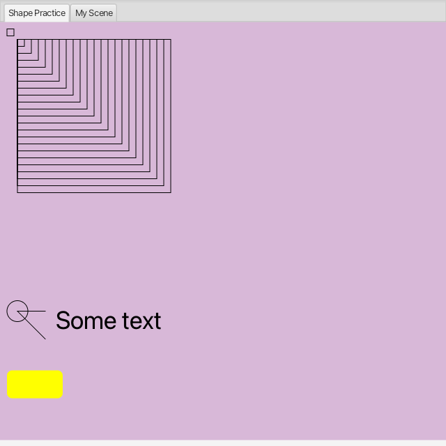

Graphics Hub · JavaFX setup and launch help
Homework Scenes: JavaFX Shapes and Scene
**Submit 10/16: Friday, October 16, 2026.**
Create drawing objects, test their properties, and combine reusable objects into a small scene. The viewer and Maven setup are provided. Work may be discussed with classmates, but submit your own implementation and screenshots.
Download HWScenes.zip · JavaFX Shapes Reference
Predict → Build → Test → Explain. Complete the shape practice before composing your scene.
Expected Shape Practice output
Fixed-task geometry should match this output. The font family and tab appearance may differ by operating system.

Learning goals
- Create Rectangle, Circle, Line, and Text objects with intentional geometry.
- Use fill, stroke, alpha, and rounded corners.
- Use a loop to generate repeated shapes from dimensions.
- Compose several shapes into a reusable object with private state.
- Position and rotate object views, and distinguish property tests from visual checks.
Prerequisites: Java fields, constructors, methods, loops, and the JavaFX introduction/Lab12. Use the supplied JavaFX shapes reference for new APIs. No FXML, Scene Builder, CSS, images, or animation are needed.
Open, run, and test
- Extract HWScenes.zip. In IntelliJ choose Open and select the HWScenes folder containing pom.xml. Do not create a new project.
- Use JDK 21; let Maven load. IntelliJ's bundled Maven is enough. Set Maven Runner JRE to Project JDK (21).
- Open View → Tool Windows → Maven. If Maven is missing, right-click pom.xml → Add as Maven Project. Run the goal
clean javafx:run. - Expect two tabs, Shape Practice and My Scene. Both start blank because the drawing methods are TODOs. The background and drawings will appear as you implement them.
- For toolbar green-arrow launching: Run → Edit Configurations → + → Maven. Name it Run HWScenes, set Working directory to this HWScenes folder, and Command line to
clean javafx:run. Select this configuration and click the toolbar Run button. A plain gutter run on DrawingApp may omit JavaFX launch configuration. - Run the JUnit suite hwk.RunAllTests from src/test/java, or the Maven goal
test. The starter has seven expected TODO-related test failures. Successful launch and compilation do not mean the homework is complete.
Terminal equivalents with Maven installed: mvn clean compile, mvn test, and mvn clean javafx:run, from HWScenes.
Files and responsibilities
| File | Your work |
|---|---|
| DrawingApp.java | Provided viewer; keep it unchanged for the required screenshots |
| ShapeDrawing.java | Complete Tasks 1–6; buildPractice already assembles their groups |
| SceneObject.java | Store state and create one reusable shape-based object |
| SceneDrawing.java | Build the composed scene using a loop |
| RunAllTests / ShapeDrawingTest | Provided tests; keep unchanged |
Each drawing method returns a Group containing freshly created nodes. Return actual geometry in the listed local coordinates; do not substitute translated geometry, screenshots, or Canvas for the specified shape nodes. A node can belong to only one parent. Creating fresh nodes prevents one drawing from stealing another drawing's children. Fill must be absent (null or Color.TRANSPARENT) where the task specifies an outline; stroke width is 1 unless otherwise stated.
Part 1: Shape Practice
Task 1: A simple square
Complete drawSimpleSquare(): one Rectangle at (10,10), width 10, height 10, black stroke width 1, and no fill. Predict its bottom-right corner before running. Check the small square remains visible above the background.
Task 2: Nested squares from a loop
Complete drawManyRectangles(double width, double height). Create black outlined, unfilled squares sharing (25,25), with sizes 10,20,30,... in increments of 10. Include every square whose right and bottom edges fit within the supplied width and height. Stroke width is 1. If a 10×10 square cannot fit, return an empty Group. Assume finite nonnegative input dimensions.
Use a loop, not a list of hardcoded rectangles. Predict the number of squares for width=180 and height=100, then test. The viewer supplies a 250×250 region, producing 22 squares. The window is intentionally fixed-size; the method must still work for other dimensions in tests.
Task 3: Circle and lines
Complete drawShapesLines(): one unfilled Circle, centered at (25,415), radius 15, with black stroke width 1. This corresponds to the old bounding box at (10,400), 30×30. Add two black Lines, each starting at that center: one ends at (65,455), the other at (65,415). Each line's stroke width is 1. Explain why passing the old top-left coordinates as the Circle center would move the shape.
Task 4: Text
Complete drawSomeText(): one black Text object reading Some text, with x=80, baseline y=440, and font size 36. Choose any available font family. Text's y-coordinate is its baseline, not its top edge. Changing one Text object's font does not change other objects' fonts.
Task 5: Color and transparency
Complete drawUsingColors(double width, double height): one Rectangle at (0,0), using the supplied dimensions, fill Color.rgb(128,0,128,0.25), no stroke, and node opacity left at 1. Assume positive finite dimensions. The color's alpha supplies the transparency; setting opacity as well would multiply transparency. buildPractice adds this background first so later shapes appear above it.
Task 6: Rounded rectangle
Complete drawRoundedRect(): one Rectangle at (10,500), width 80, height 40, yellow fill, no stroke, arcWidth 15 and arcHeight 15. Predict what would change if you set the arc dimensions to zero, then check the actual result.
Run RunAllTests after each task. All seven tests should pass after Part 1. They check the returned nodes' properties, not the displayed pixels, whether a loop was used, or the creative scene.
Part 2: Compose a small scene
Task 7: One object, several views
Choose a simple object: a beacon, robot, house, tree, coordinate marker, or another readable motif.
- In SceneObject, use private fields to store the constructor's position (x,y), rotation angle in degrees, and color. Other private fields/helpers are your choice.
- Implement createView() with at least three JavaFX shapes arranged around a local origin. Reuse this class for every instance; do not duplicate the entire object drawing in SceneDrawing.
- Translate the returned Group to the object's (x,y). Rotate it around an explicitly chosen local pivot using Rotate(angle,pivotX,pivotY). Build fresh nodes on each call.
- In SceneDrawing.buildScene(), add a sky and ground (or other two-region background) first. Use a loop to create at least three SceneObject instances at distinct positions; use at least one nonzero rotation. Keep all objects visible inside the 640×600 drawing area.
- Add a short Text caption. Choose colors and positions that make the objects and caption easy to distinguish.
No particular motif, exact creative geometry, or font family is required. All three instances should visibly share the same design. The scene must demonstrate composition, repetition, translation, and rotation. This part is reviewed from your source and screenshot; there is no pixel-match test.
Assessment and submission
Grading: 30 points total. Tasks 1–6 account for 20 points through JUnit/property checks; the scene accounts for 6 manual points; screenshots for 2; readable responsibilities and reuse for 2. Passing the tests is necessary for the automated portion and does not establish full-credit scene correctness. Artistic sophistication is not graded.
Submit:
- ShapeDrawing.java, SceneObject.java, and SceneDrawing.java, plus any additional Java source files you create. Keep package hwk and the provided public method signatures.
- One screenshot of the running Shape Practice tab with all six tasks visible.
- One screenshot of the running My Scene tab showing your background, caption, and repeated objects.
Keep DrawingApp and the supplied tests unchanged. Do not submit target/, IDE files, compiled classes, the whole ZIP, or test replacements. No UML or written reflection submission is required. Be ready to run your program and explain an object or coordinate choice if the instructor requests verification. Follow the course's established AI-use and collaboration policies.